2023年北京市中考数学真题 · 数学解答题 第27题 · 对应解析
27. 在中、
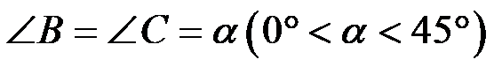
，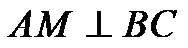
于点M，D是线段上的动点（不与点M，C重合），将线段绕点D顺时针旋转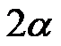
得到线段．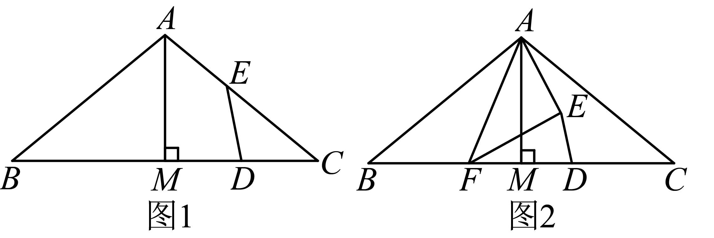
（1）如图1，当点E在线段 上时，求证：D是的中点；
上时，求证：D是的中点；
（2）如图2，若在线段上存在点F（不与点B，M重合）满足，连接，，直接写出
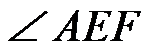
的大小，并证明．【答案】（1）见解析 （2）
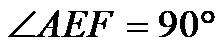
，证明见解析【解析】
【分析】（1）由旋转的性质得，
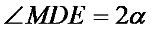
，利用三角形外角的性质求出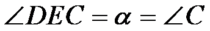
，可得，等量代换得到即可；（2）延长到H使，连接，
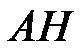
，可得是的中位线，然后求出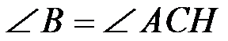
，设，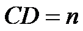
，求出，证明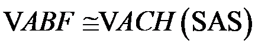
，得到，再根据等腰三角形三线合一证明即可．【小问1详解】
证明：由旋转的性质得：，，
∵
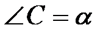
，∴
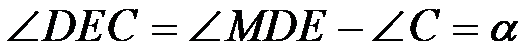
，∴
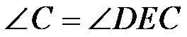
，∴，
∴，即D是 中点；
中点；
【小问2详解】
；
证明：如图2，延长到H使，连接，，
∵，
∴是的中位线，
∴，，
由旋转的性质得：，，
∴
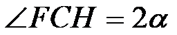
，∵
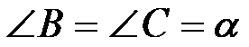
，∴
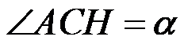
，是等腰三角形，∴，，
设，，则
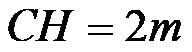
，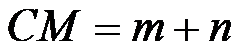
，∴
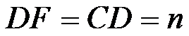
，∴
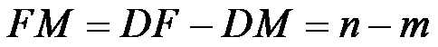
，∵，
∴
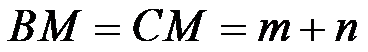
，∴
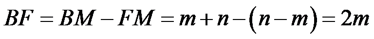
，∴
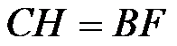
，在
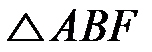
和中，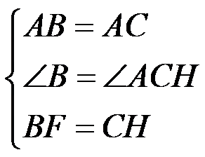
，∴，
∴，
∵，
∴，即．
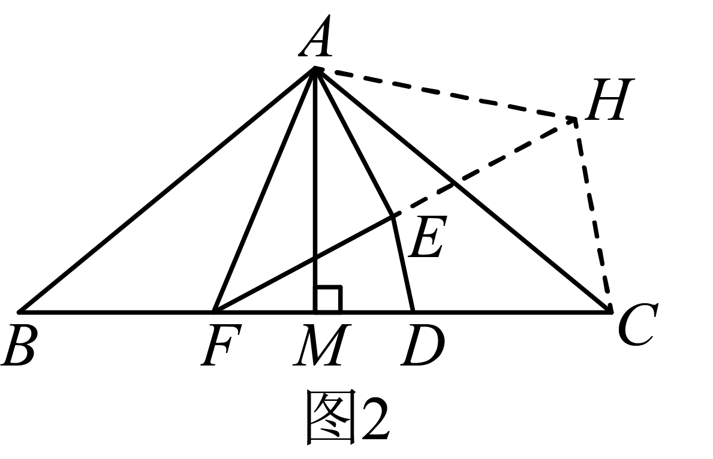
【点睛】本题考查了等腰三角形的判定和性质，旋转的性质，三角形外角的性质，三角形中位线定理以及全等三角形的判定和性质等知识，作出合适的辅助线，构造出全等三角形是解题的关键．